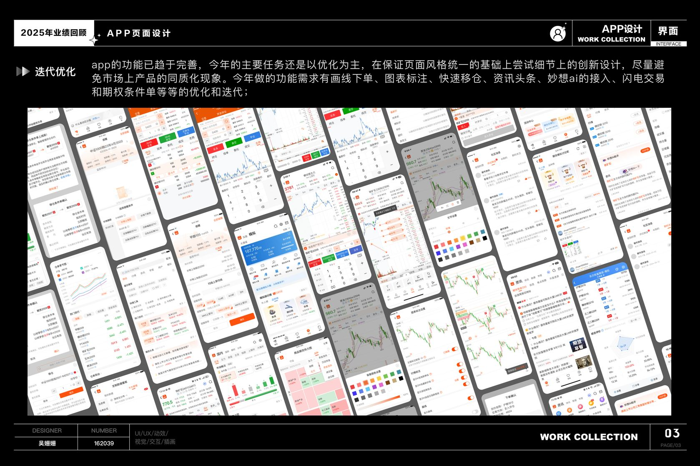
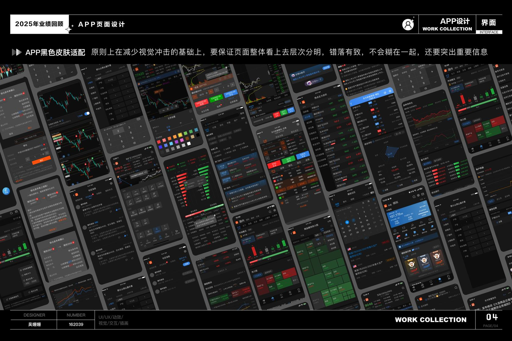
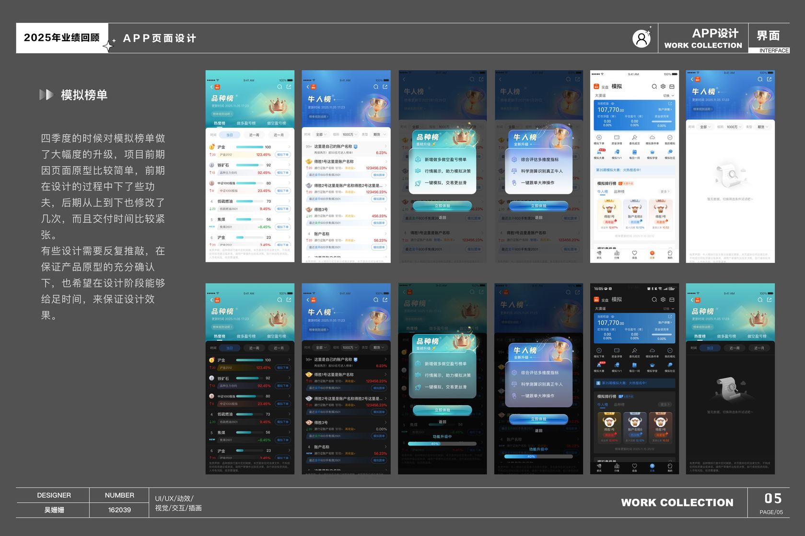
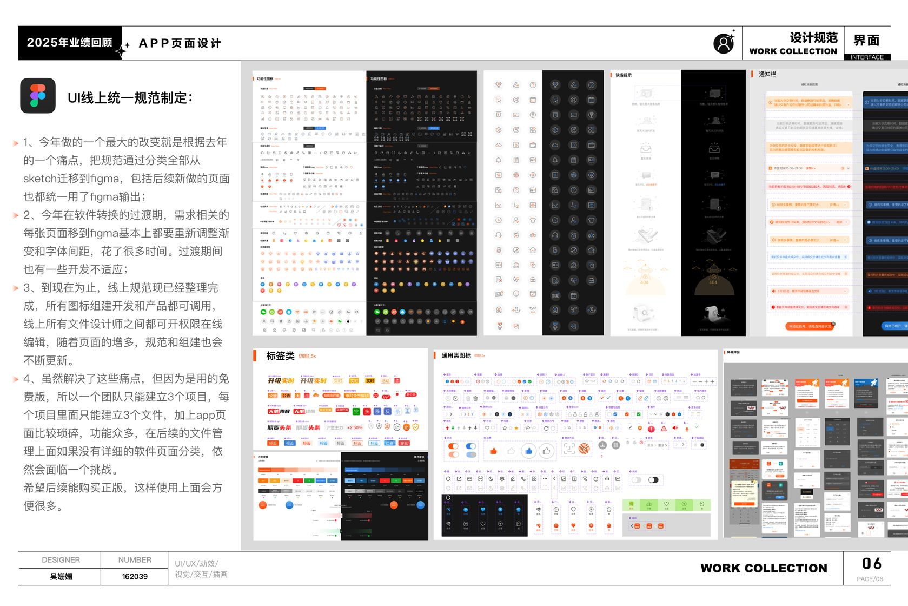
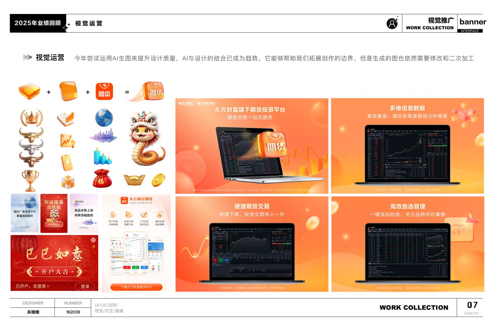
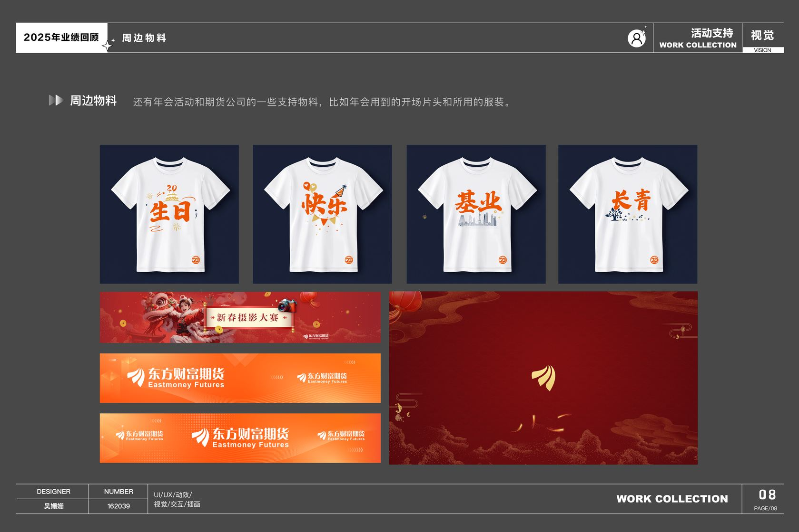
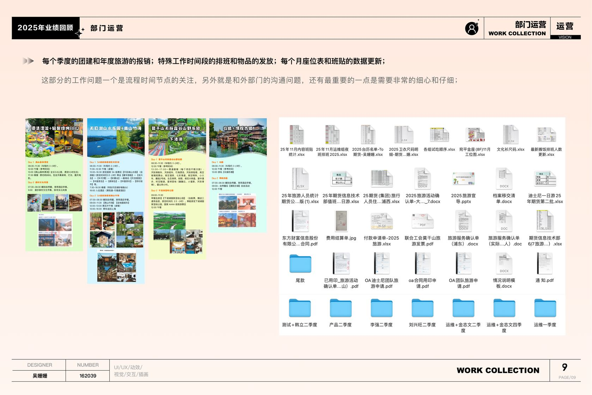
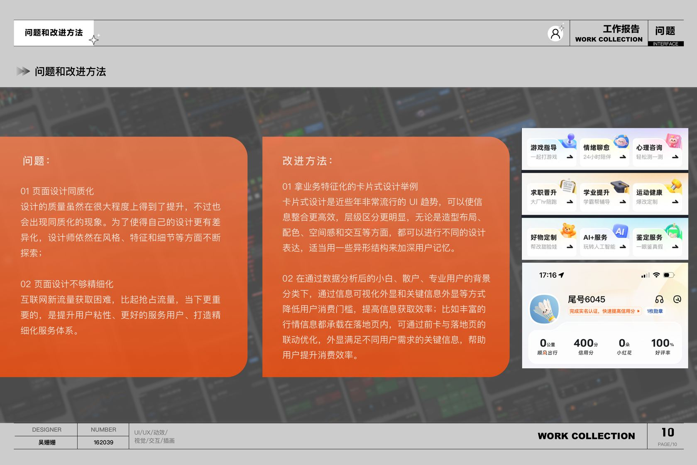
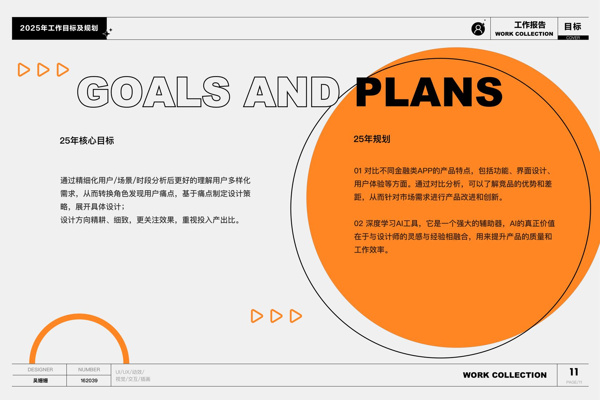

让交易流程更顺手
围绕期货 App 的高频场景持续迭代，完善下单、看盘、资讯和账户操作中的关键体验。
年度设计工作回顾
从产品体验、设计规范到视觉运营，记录每一次把需求转化为清晰体验的过程。
四类工作彼此支撑：以产品体验为核心，也持续承担品牌传播与团队协作。
2025 年的工作围绕产品设计与体验优化展开，同时推进线上设计规范、支持运营传播，并承担部门日常协同事项。下方占比沿用原始汇报材料，表达的是工作内容分布。
将全年工作归纳为四个模块，方便按主题展开汇报。
围绕期货 App 的高频场景持续迭代，完善下单、看盘、资讯和账户操作中的关键体验。
支持 App 功能宣传、投教推广和重要节点视觉物料。尝试 AI 辅助出图，再通过人工调整完成细节与风格统一。
重新整理线上设计标准，统一图标与组件的协作方式，让设计、产品和开发能够共享并按权限维护。
完成年会视频与服装等周边物料，并协助团建、年度旅游、物品发放、排班及座位信息维护。
从单点功能到长期协作基础，持续改善产品体验和设计交付。
除高频功能优化外，重点投入期货吧改版、模拟榜单第四季度升级、黑色主题适配与期货账单等项目，让界面信息与用户任务更贴合。
梳理内容浏览和互动场景，优化页面信息组织。
围绕第四季度版本迭代更新榜单体验。
完善主题适配，并呈现账户周期信息。
整理标准、图标与组件，建立跨角色共享的维护方式。









从页面细节、业务表达和用户差异出发，让设计决策更有依据。
部分页面的设计表达趋同，精细度不足。后续需要结合具体业务，继续打磨卡片结构、表单布局、色彩层级、间距与交互反馈。
面对不同经验与需求的用户，重点信息的组织和展示方式还可以更清晰。需要结合数据观察与场景分析，持续验证设计判断。
吴姗姗
期货信息技术部 · 产品部
2025 年度工作回顾